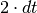
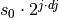
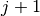
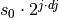
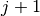
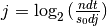
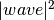
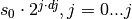

wavelet¶
-
fisspy.analysis.wavelet.wavelet(y, dt, dj=0.25, s0=False, j=False, mother='MORLET', param=False, pad=True)[source]¶ Compute the wavelet transform of the given y with sampling rate dt.
By default, the MORLET wavelet (k0=6) is used. The wavelet basis is normalized to have total energy=1 at all scales.
Parameters: - y (ndarray) – The time series of length n.
- dt (float) – The time step between each y values. i.e. the sampling time.
- dj ((optional) float) –
The spacing between discrete scales. The smaller, the better scale resolution.
- Default is 0.25
- s0 ((optional) float) –
- The smallest scale of the wavelet.
- Default is .
- j ((optional) int) –
The number of scales minus one. Scales range from
 up to , to give
a total of  scales.
up to , to give
a total of  scales.- Default is .
- mother ((optional) str) –
The mother wavelet function. The choices are ‘MORLET’, ‘PAUL’, or ‘DOG’
- Default is ‘MORLET’
- param ((optional) int) –
The mother wavelet parameter.
For ‘MORLET’ param is k0, default is 6.
For ‘PAUL’ param is m, default is 4.
For ‘DOG’ param is m, default is 2.
- pad ((optional) bool) – If set True, pad time series with enough zeros to get N up to the next higher power of 2. This prevents wraparound from the end of the time series to the beginning, and also speeds up the FFT’s used to do the wavelet transform. This will not eliminate all edge effects.
Returns: - wave (~numpy.ndarray) – The WAVELET transform of y. (j+1, n) complex arry. np.arctan2(wave.imag,wave.real) gives the WAVELET phase. wave.real gives the WAVELET amplitude. The WAVELET power spectrum is .
- period (~numpy.ndarray) – The vecotr of ‘Fourier’ periods (in time units) that correspods to the scales.
- scale (~numpy.ndarray) – The vecotr of scale indices, given by  where is the total number of scales.
- coi (~numpy.ndarray) – The Cone-of-Influence, which is a vector of N points that contains the maximum period of useful information at that particular time. Periods greater than this are subject to edge effets.
Notes
This function based on the IDL code WAVELET.PRO written by C. Torrence, and Python code waveletFuncitions.py written by E. Predybayalo.
References
Torrence, C. and Compo, G. P., 1998, A Practical Guide to Wavelet Analysis, Bull. Amer. Meteor. Soc., 79, 61-78.
http://paos.colorado.edu/research/wavelets/
Example
>>> from fisspy.analysis import wavelet >>> wave, period, scale, coi = wavelet.wavelet(y,dt,dj=dj,j=j,mother=mother,pad=True)